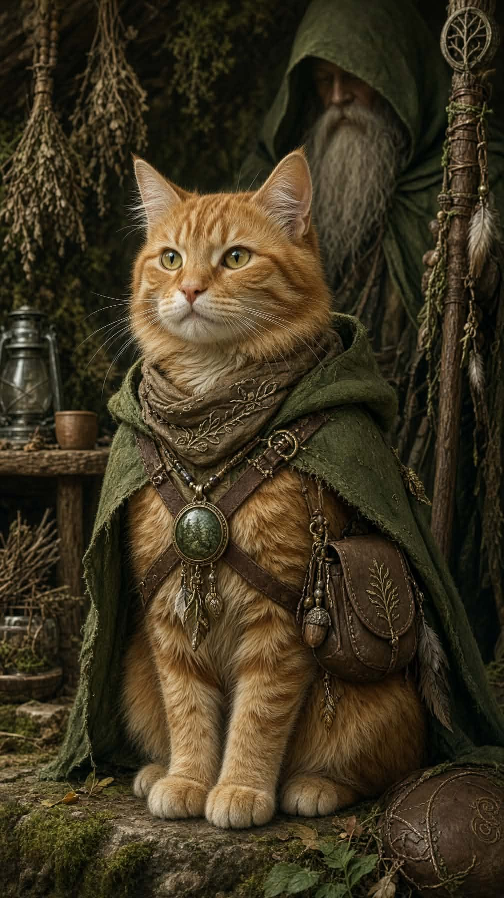
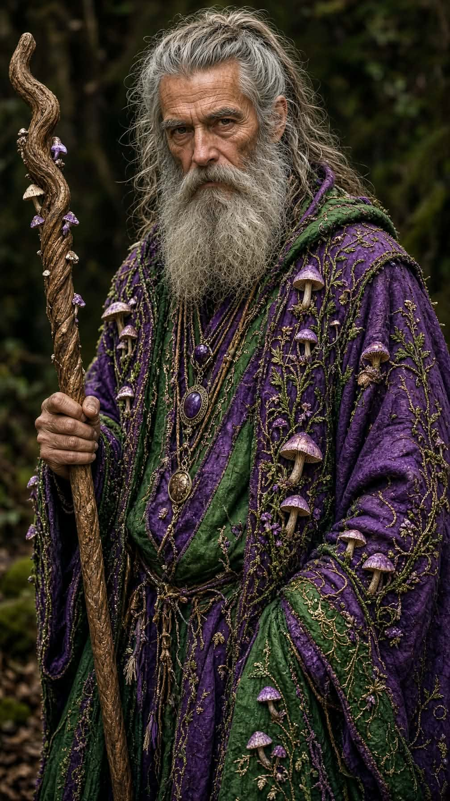

Awaken the three root seals
Approach a seal · F attune
The roots remember a world before the veil.Walk beside Punkin. Follow the signal home.

Click to walk. Hold right mouse to cast.W bloom · E roots · R heal · Space dodge · F awaken seals.